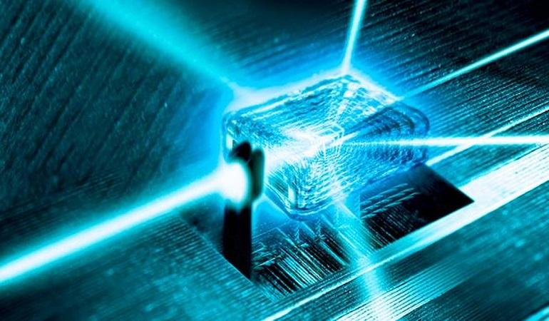
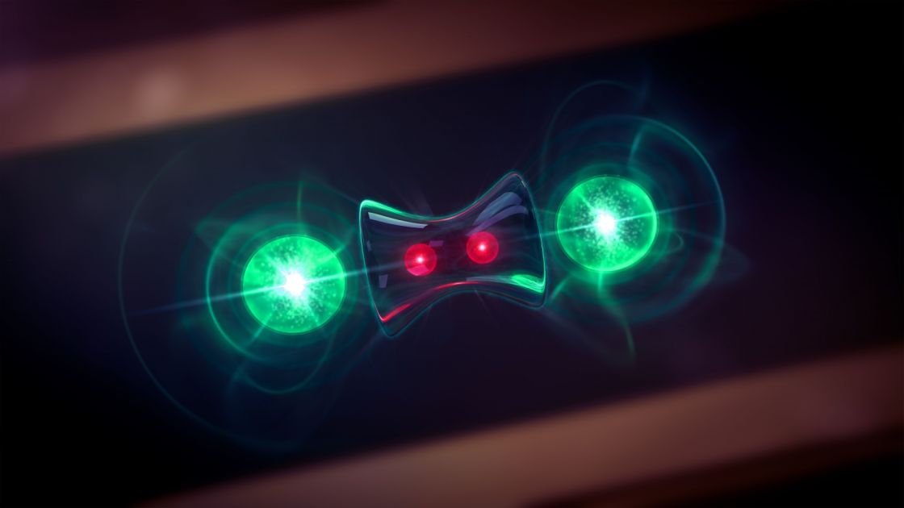
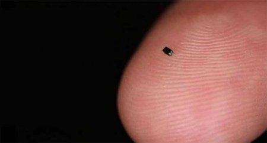

Наскільки ми близькі до створення КК?

Звичайно, сперечатися про істинність квантової суті комп’ютерів D-Wave можна скільки завгодно, але не можна не визнати, що інтерес до квантових комп’ютерів є як у вчених по всьому світу, так і великих корпорацій.
У тому числі й у Google (команда проекту Google Quantum AI), яка збирається за допомогою квантових комп’ютерів вирішити завдання, які неможливо або недоцільно вирішувати за допомогою класичних обчислювальних пристроїв.Гонка в самому розпалі. Провідні компанії світу намагаються створити перший квантовий комп’ютер, в основі якого лежить технологія, що давно обіцяє вченим допомогти в розробці чудових нових матеріалів, ідеальному шифруванні даних і точному прогнозуванні змін клімату Землі. Така машина напевно з’явиться не раніше ніж через десять років, але це не зупиняє IBM, Microsoft, Google, Intel та інших. Вони буквально штуками викладають квантові біти – або кубіти – на процесорному чіпі. Але шлях до квантових обчислень включає багато більше, ніж маніпуляції з субатомними частинками.
Зараз ця сфера активно розвивається, хоча поки й не має практичного застосування. Але через цю стадію пройшли багато технологій, які стали невід’ємною частиною нашого життя. Тим більше, що вчені дивляться в майбутнє з великим оптимізмом.
Системні недоліки квантового комп’ютера
Втім, у квантових комп’ютерів є й системні недоліки, навіть якщо не брати до уваги складність фізичної реалізації.
По-перше, як уже згадувалося, результат квантових обчислень носить імовірнісний характер.
По-друге, зовнішні впливи, наприклад, магнітні поля, можуть зруйнувати квантову систему або внести в неї спотворення. Не варто забувати й про складнощі зчитування стану квантових регістрів. Однак усі ці складнощі не лякають не тільки вчених, але й комерційні компанії, які все активніше цікавляться темою КК.

Найменша камера в світі

Камера OmniVision OV6948 увійшла до Книги рекордів Гіннеса за «Найменший датчик зображення».
Камера використовується в медичних цілях і забезпечує високоякісні зображення з найменших частин людського тіла.
OmniVision OV6948 - це повністю упакований модуль камери на рівні пластини, розміри якого становлять усього 0,65 мм х 0,65 мм з висотою 1,158 мм. Пристрій здатний відтворювати кольорові зображення розміром 40 000 пікселів за допомогою чіпа RGB Bayer з підсвічуванням на задній стороні. Розмір кожного фотосайту становить всього 1,75 мкм.
Модуль камери має 4-контактний інтерфейс для спрощеної інтеграції і велике поле зчитування з 120 градусами, пов'язане з розширеною фокусуванням, яка варіюється від 3 мм до 30 мм. Масив зображень здатний захоплювати зображення з роздільною здатністю 200 × 200, відео зі швидкістю до 30 кадрів в секунду і аналоговий вихід, який може передавати більше 4 метрів з мінімальним шумом.
OVM6948 випускається в серійному виробництві разом з комплектом.